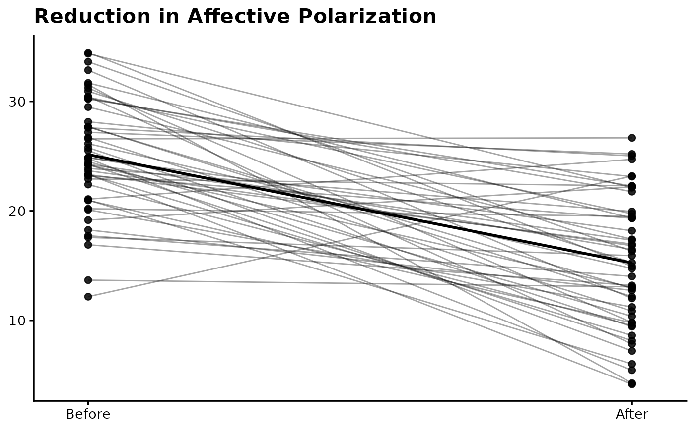

Creates a publication-ready paired (within-subject) plot for pre–post designs. Individual participant trajectories are shown as connected lines with optional mean overlay. Designed for thermometer-style scales or other continuous outcomes.
Usage
plot_prepost(
data,
pre,
post,
pre_label = "Pre",
post_label = "Post",
y_label = NULL,
title = NULL,
point_size = 2,
line_alpha = 0.35,
show_mean = FALSE
)Arguments
- data
A data frame in wide format containing the pre and post variables.
- pre
Unquoted name of the pre-intervention variable.
- post
Unquoted name of the post-intervention variable.
- pre_label
Character. Label displayed for the pre condition.
- post_label
Character. Label displayed for the post condition.
- y_label
Character. Label for the y-axis. Defaults to NULL.
- title
Character. Optional plot title.
- point_size
Numeric. Size of individual points. Default is 2.
- line_alpha
Numeric between 0 and 1. Transparency of paired lines.
- show_mean
Logical. If TRUE, overlays the mean trajectory.
Details
The function reshapes wide data internally using tidy evaluation. It is intended for within-subject comparisons (e.g., pre–post RCT outcomes). No axis limits are imposed; scaling adapts to the data range.
Examples
df <- data.frame(
pre = rnorm(50, 25, 5),
post = rnorm(50, 15, 5)
)
plot_prepost(df, "pre", "post",
pre_label = "Before",
post_label = "After",
title = "Reduction in Affective Polarization",
show_mean = TRUE)
